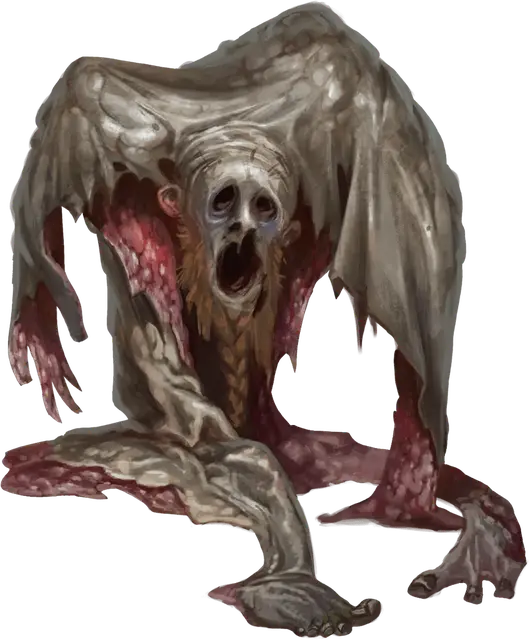

Бескостный
Boneless
Средняя Нежить

Класс Доспеха 12
Хиты 26 (4к8 + 8)
Скорость 30 футов
| мод | спас | ||
|---|---|---|---|
| СИЛ | 16 | +3 | +3 |
| ЛОВ | 14 | +2 | +2 |
| ТЕЛ | 15 | +2 | +2 |
| мод | спас | ||
|---|---|---|---|
| ИНТ | 1 | −5 | −5 |
| МДР | 10 | +0 | +0 |
| ХАР | 1 | −5 | −5 |
Навыки Скрытность +4
Сопротивление урону яд; дробящий
Иммунитет к состояниям испуг, истощение, очарование
Чувства тёмное зрение 60 футов, пассивное Восприятие 10
Языки понимает все, известные при жизни, но не говорит
Опасность 1 (200 опыта)
Бонус мастерства +2
Особенности
Сжимаемость. Бескостный может проходить через любое отверстие шириной не менее 1 дюйма без протискивания. Он также может сжаться, чтобы поместиться в пространство, в которое могло бы поместиться крошечное существо.
Необычная природа. Бескостный не нуждается в воздухе, еде, питье или сне.
Действия
Мультиатака. Бескостный совершает два Размашистых удара. Если обе атаки поражают Большое или меньшего размера существо, оно становится схваченным (Сл высвобождения 13), и бескостный может использовать Сокрушительные объятия.
Размашистый удар. Рукопашная атака оружием: +5 к попаданию, досягаемость 5 футов, одна цель. Попадание: 5 (1к4 + 3) дробящего урона.
Сокрушительные объятия. Бескостный оборачивает своим телом существо Большого или меньшего размера, схваченное им. Пока бескостный прикреплен, цель ослеплена и не может дышать. Она также должна совершать спасбросок Силы Сл 13 в начале каждого хода бескостного, получая при провале 5 (1к4 + 3) дробящего урона. Если что-то перемещает цель, бескостный двигается вместе с ней. Бескостный может отделиться, потратив 5 футов своего перемещения. Существо, в том числе цель объятий, может действием попытаться отделить бескостного и заставить его переместиться в ближайшее свободное пространство, делая это при успешной проверке Силы Сл 13. Когда бескостный умирает, он отделяется от любого существа, к которому привязался.
Описание
Не все одушевленные трупы поднимаются из своих могил. Бескостные — это останки нежити, лишенные скелетов. Большинство восстает из тел тех, чья кончина была жестокой, например из-за намеренного сдирания кожи или раздавливания. Бессмертная злоба наполняет то, что осталось, оболочка отделяется и скользит в погоне за местью или по прихоти зловещих хозяев. Проскальзывая сквозь щели и под дверями, эта крадущаяся нежить стремится еще раз обрести живой каркас, обвиваясь вокруг своих жертв и выжимая их до смерти в своих объятиях всего тела.
Бескостные бывают самых разных форм. Наиболее распространенным случаем являются одушевленные шкуры конкретных существ, но грязные заклинатели могут создавать этих ужасных существ, используя обрывки неудачных экспериментов, некромантские суспензии, клочья выброшенных волос, скотобойни и склепы. Происхождение не влияет на характеристики бескостного, но придаёт ему различные формы.
Некоторые злодеи в результате несчастного случая или злого умысла используют один труп, чтобы создать двух отдельных неживых существ. Бескостные могут висеть на телах другой нежити, таких как скелеты или зомби. Вид бескостного, отделяющегося от своей независимой нежити, преследует в кошмарах многих опытных охотников на монстров.